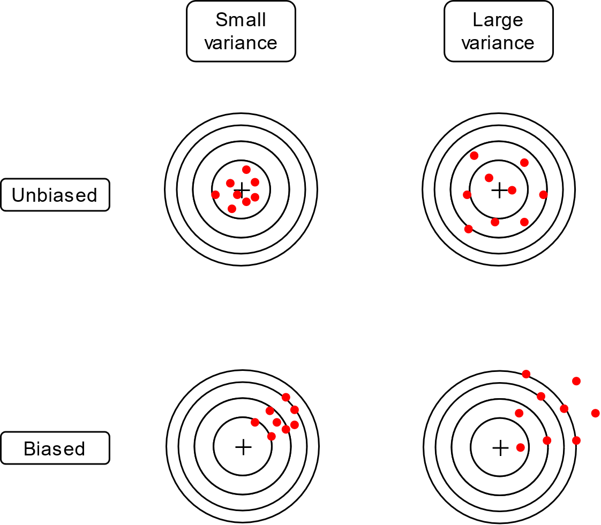
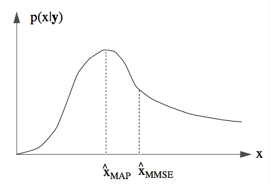

7 Elemente de teoria estimării
\[ \newcommand{\grtlessH}{\underset{{H_0}}{\overset{H_{1}}{\gtrless}}} \renewcommand{\vec}[1]{\mathbf{#1}} \]
7.1 Ce înseamnă “estimare”?
Vom considera următoarea problemă de bază.
Un emițător transmite un semnal \(s_\Theta(t)\), care depinde de parametru necunoscut \(\Theta\) (de ex. amplitudinea e necunoscută). În afara acestui parametru, semnalul este cunoscut în totalitate.
Semnalul acesta ajunge la receptor afectat de zgomotul \(n(t)\), astfel încât semnalul recepționat \(r(t)\) este: \[r(t) = s_\Theta(t) + n(t) \]
Teoria estimării se ocupă de problema estimării parametrului \(\Theta\), cunoscând semnalul recepționat și parametrii statistici ai zgomotului.
Întrucât nu cunoaștem valorile exacte ale zgomotului \(n(t)\), nu putem găsi valoarea adevărată a parametrului necunoscut \(\Theta\), tot ceea ce putem face este să o estimăm. Valoarea găsită în urma estimării va fi notată \(\hat{\Theta}\), și se numește estimatul lui \(\Theta\)
Există întotdeauna o eroare de estimare \(\epsilon\) între valoarea adevărată a lui \(\Theta\) și estimatul său de la recepție: \[\epsilon = \hat{\Theta} - \Theta\]
Exemple:
Amplitudinea unui semnal constant: \(r(t) = A + zgomot\), trebuie estimat \(A\)
Faza unui semnal sinusoidal: \(r(t) = \cos(2 \pi f t + \phi) + zgomot\), de estimat \(\phi\)
Exemple mai complicate:
- De estimat/decis ce cuvânt este pronunțat într-un semnal vocal
Fie următoarea problemă de estimare:
Se recepționează un semnal \(r(t) = A + zgomot\), estimați-l pe \(A\)
La detecție: se alege între două valori cunoscute ale \(A\):
- de ex. \(A\) poate fi 0 sau 5 (ipotezele \(H_0\) și \(H_1\))
La estimare: \(A\) poate fi oricât => se alege între o infinitate de opțiuni ale \(A\)
- \(A\) poate fi orice valoare din \(\mathbb{R}\), în general
Există o strânsă legătură între problemele de decizie și cele de estimare. Practic, prin “decizie” înțelegem o problemă de estimare restrânsă doar la un set discret, redus, de opțiuni; se alege doar una dintre cele câteva ipoteze. La rândul său, o problemă de estimare poate fi văzută ca o problemă de detecție, dar cu un număr infinit de opțiuni posibile. Metodele statistice folosite sunt foarte similare în ambele situații
7.2 Definirea problemei
Considerăm un semnal recepționat \(r(t)\), depinzând de parametrul cu valoare necunoscută \(\Theta\), și afectat de zgomot aditiv:
\[r(t) = s_\Theta(t) + zgomot\]
Din \(r(t)\) se iau N eșantioane, la momentele de timp \(t_i\),
\[r_i = r(t_i) = s_\Theta(t_i) + n(t_i)\]
obținându-se vectorul de eșantioane:
\[\vec{r} = [r_1, r_2, ... r_N]\]
Fiecare eșantion \(r_i = s_\Theta(t_i) + n(t_i)\) este o variabilă aleatoare, având aceeași distribuție ca eșantionul de zgomot \(n_(t_i)\), dar translată cu \(s_\Theta(t_i)\). Distribuția eșantionului \(r_i\), care depinde așadar de \(\Theta\), este notată:
\[w_i(r_i | \Theta)\]
Întregul vector de eșantioane \(\vec{r}\) este o variabilă aleatoare N-dimensională ce depinde de \(\Theta\), și are o distribuție N-dimensională \(w(\vec{r} | \Theta)\). Dacă zgomotul este alb, autnci eșantioane diferite de zgomot sunt independente, iar distribuția vectorului \(\vec{r}\) devine egală cu produsul distribuțiilor fiecărui eșantion:
\[w(\vec{r} | \Theta) = w_1(r_1 | \Theta) \cdot w_2(r_2 | \Theta) \cdot ... \cdot w_N(r_N | \Theta)\]
7.3 Estimarea de plauzibilitate maximă (Maximum Likelihood)
7.3.1 Tipuri de estimare
Există două abordări ale problemelor de estimare:
Estimare de plauzibilitate maximă (Maximum Likelihood Estimation, MLE): În afară de \(\vec{r}\) nu se cunoaște nimic despre \(\Theta\), decât cel mult vreun domeniu de existență (de ex. \(\Theta > 0\))
Estimarea ML este un caz particular al celei de-a doua abordări.
Estimare Bayesiană: În afară de \(\vec{r}\) se mai cunoaște o distribuție a priori \(w(\Theta)\) a lui \(\Theta\), care indică ce valori ale lui \(\Theta\) sunt mai probabile sau mai puțin probabile.
7.3.2 Estimarea tip Maximum Likelihood
Dacă nu se cunoaște vreo distribuție a priori se folosește metoda estimării de plauzibilitate maximă (“Maximum Likelihood”, ML)
Dat fiind vectorul de observații \(\vec{r}\) cunoscut, se definește plauzibilitatea unui valori \(\Theta\) astfel:
\[L(\Theta | \vec{r}) = w(\Theta | \vec{r})\]
Funcția \(L(\Theta | \vec{r})\) reprezintă funcția de plauzibilitate, care asociază pentru fiecare valoare posibilă \(\Theta\) a parametrului căutat o anumită plauzibilitate. Conform ecuației, plauzibilitatea unei valori oarecare \(\Theta\) reprezintă “probabilitatea” ca, dacă parametrul avea acea valoare, să se obțină vectorul $ care s-a obținut.
Comparând cu formula din Cap. 2, slide 20, se observă ce e aceeași definiție, cu diferența că aici estimăm pe \(\Theta\), iar în acel caz “estimam” ipoteza corectă \(H_i\).
Estimarea de plauzibilitate maximă (Maximum Likelihood, ML) constă în alege estimatul \(\hat{\Theta}_{ML}\) ca fiind valoarea care maximizează plauzibilitatea, dat fiind valorile observate \(\vec{r}\), adică valoarea care maximizează \(L(\Theta | \vec{r})\):
\[\hat{\Theta}_{ML} = \arg\max_{\Theta} L(\Theta | \vec{r}) = \arg\max_{\Theta} w(\vec{r} | \Theta)\]
În general, se caută valoarea care maximizează funcția pe întreaga axă \(\mathbb{R}\). Dacă se cunoaște că \(\Theta\) aparține doar unui anumit interval, se poate face maximizarea doar pe acel interval.
Reamintim, in acest context, notațiile matematice generale
- \(\arg\max_{x} f(x)\) este “valoarea \(x\) are maximizează funcția f(x)”
- \(\max_{x} f(x)\) = “valoarea maximă a funcției f(x)”
Se observă faptul că estimarea ML este foarte similară cu decizia ML. Criteriul de decizie ML înseamnă, de fapt, alegerea ipotezei cu plauzibilitate mai mare: \[\frac{L(H_1 | r)}{L(H_0 | r)} = \frac{w(r|H_1)}{w(r|H_0)} \grtlessH 1\] Același lucru este valabil și la estimare, cu diferența că nu se alege între două alternative, ci se alege valoarea reală din întregul \(\mathbb{R}\) care maximizează plauzibilitatea: \[\hat{\Theta}_{ML} = \arg\max_{\Theta } L(\Theta | \vec{r}) = \arg\max_{\Theta} w(\vec{r} | \Theta)\]
7.3.3 Rezolvare matematică
În continuare, ne punem problema cum se rezolvă problema de maximizare, adică cum se găsește estimatul \(\hat{\Theta}_{ML}\) care maximizează \(L(\Theta | vec{r})\).
Ca la orice funcție continuă, maximul se găsește prin derivare și egalare cu 0: \[\frac{d L(\Theta | \vec{r})}{d\Theta} = 0\] În plus, se poate aplica logaritmul natural asupra funcției \(L(\Theta | \vec{r})\) înainte de derivare, astfel încât se derivează \(\ln{L(\cdot)}\) (funcția “log-likelihood”): \[\frac{d \ln\left(L(\Theta | \vec{r})\right)}{d\Theta} = 0\] Acest lucru ajută la simplificarea expresiilor de tip exponențial, și nu schimbă valoarea în dreptul căreia se găsește maximul funcției.
Procedura de găsire a estimatului ML este detaliată mai jos.
- Se găsește expresia funcției \[L(\Theta | \vec{r}) = w(\vec{r} | \Theta)\]
- Se pune condiția ca derivata lui \(L(\Theta | \vec{r})\) sau a lui \(\ln(\left(L(\Theta | \vec{r})\right)\) să fie 0 \[\frac{d L(\Theta)}{d\Theta} = 0, \text{ sau }\frac{d \ln\left(L(\Theta)\right)}{d\Theta} = 0\]
- Se rezolvă ecuația, se găsește valoarea \(\hat{\Theta}_{ML}\)
- Se verifică că derivata a doua în punctul \(\hat{\Theta}_{ML}\) este negativă, pentru a verifica că este un punct de maxim (și nu de minim). Reamintim că derivata este nulă și pentru maxime și pentru minime. Uneori putem ignora această etapă, dacă se cunoaște faptul că funcția are doar un punct de extrem.
Găsiți estimatul Maximum Likelihood pentru un semnal de valoare constantă \(s_\Theta(t) = A\) din 5 măsurători afectate de zgomot \(r_i = A + zgomot\), cu valori egale cu \([5, 7, 8, 6.1, 5.3]\). Zgomotul este AWGN \(\mathcal{N}(\mu=0, \sigma^2)\).
Soluție: la tablă
Estimatul \(\hat{A}_{ML}\) este chiar valoarea medie a eșantioanelor (deloc surprinzător).
import matplotlib.pyplot as plt, numpy as np, math;
mu = 0;
sigma = 1;
r = np.array([5, 7, 8, 6.1, 5.3])
plt.stem(r, basefmt=" ", use_line_collection=True)
plt.plot(np.mean(r) * np.ones(r.shape), color = 'red')
plt.xlabel('Esantioane');
plt.ylabel('Valori');
plt.title('Estimarea unui semnal constant');
plt.legend(('Estimatul', 'Esantioane'))
plt.savefig('fig/03_NumericalSim_Constant.png', transparent=True, bbox_inches='tight', dpi=300)
plt.close()
O problemă de estimare poate fi înțeleasă ca o problemă de aproximare a unei curbe, găsind cea mai bună potrivire a lui \(s_\Theta(t)\) prin datele \(\vec{r}\). Elementele cheie se observă din exemplul grafic anterior:
- avem un set de date \(\vec{r}\), care reprezintă o serie de puncte măsurate
- se cunoaște forma semnalului, adică o dreaptă orizontală (\(A\) constant)
- prin estimare se aproximează în mod optim poziția dreaptei prin setul de date
7.3.4 Estimarea ML în zgomot de tip AWGN
Fie semnalul original \(s_\Theta(t)\), și zgomotul de tip AWGN \(\mathcal{N}(\mu=0, \sigma^2)\).
Eșantioanele \(r_i\) sunt luate la momentele \(t_i\), și vor avea distribuție normală, cu media \(\mu = s_\Theta(t_i)\) și varianța \(\sigma^2\).
Funcția de plauzibilitate \(L(\Theta | \vec{r})\) a întregului vector \(\vec{r}\) se poate descompune ca produsul plauzibilităților fiecărui eșantion \(r_i\) în parte: \[\begin{split} L(\Theta | \vec{r}) = w(\vec{r} | \Theta) =& \prod_{i=1}^N \frac{1}{\sigma \sqrt{2 \pi}} e^{- \frac{(r_i - s_\Theta(t_i))^2}{2 \sigma^2}} \\ =& \left( \frac{1}{\sigma \sqrt{2 \pi}} \right)^N e^{- \frac{\sum(r_i - s_\Theta(t_i))^2}{2 \sigma^2}} \end{split}\]
Logaritmul plauzibilității (“log-likelihood”) este: \[\begin{split} \ln\left(L(\Theta | \vec{r})\right) =& \underbrace{\ln\left(\frac{1}{\sigma \sqrt{2 \pi}}\right)}_{constant} - \frac{\sum(r_i - s_\Theta(t_i))^2}{2 \sigma^2} \end{split}\]
Maximul funcției se atinge atunci când exponentul este minim: \[\hat{\Theta}_{ML} = \arg\max_{\Theta} L(\Theta | \vec{r}) = \arg\min \sum(r_i - s_\Theta(t_i))^2\]
Se observă că termenul \(\sum(r_i - s_\Theta(t_i))^2\) reprezintă chiar distanța Euclideană ridicată la pătrat dintre vectorii cu valorile \(\r_i\) și \(s_\Theta(t_i)\): \[d(\vec{r},s_\Theta) = \sqrt{\sum (r_i - s_\Theta(t_i))^2}\] \[\left(d(\vec{r},s_\Theta)\right)^2 = \sum (r_i - s_\Theta(t_i))^2\]
Așadar, estimarea ML în cazul zgomotului AWGN se poate rescrie sub forma: \[\hat{\Theta}_{ML} = \arg\max_{\Theta} L(\Theta | \vec{r}) = \arg\min_\Theta d(\vec{r}, \vec{s}_\Theta)^2\]
Estimatul de plauzibilitate maximă (ML) \(\hat{\Theta}_{ML}\) este acea valoare care face \(s_\Theta(t_i)\) cel mai apropiat de vectorul recepționat \(\vec{r}\). Ca interpretare, o distanță mică înseamnă o potrivire mai bună, deci o plauzibilitate mai bună.
Subliniem că aceeași interpretare bazată pe distanța minimă era valabilă și pentru decizia ML, cu diferența că la decizie se alege minimul dintre două opțiuni, în timp ce aici alegem minimul dintre toate opțiunile posibile.
Relația care definește estimarea ML pentru zgomot AWGN este valabilă pentru orice fel de spații vectoriale (vectori cu N elemente, semnale continue etc). În funcție de natura semnalelor se modifică doar definiția distanței Euclidiene, nu și regula de estimare.
Sumarizând, procedura pentru estimarea tip ML în zgomot AWGN este următoarea.
Se scrie expresia pentru pătratul distanței: \[D = \left(d(\vec{r},s_\Theta)\right)^2 = \sum (r_i - s_\Theta(t_i))^2\]
Se caută minimul expresiei, deci egalăm derivata cu 0: \[\frac{d D}{d\Theta} = \sum 2 (r_i - s_\Theta(t_i)) (- \frac{d s_\Theta(t_i)}{d\Theta}) = 0\]
Se rezolvă și obținem valoarea \(\hat{\Theta}_{ML}\)
Se verifică că derivata a doua în punctul \(\hat{\Theta}_{ML}\) este pozitivă, pentru a se verifica că punctul este un minim. Uneori se poate sări peste această etapă, dacă se cunoaște ca funcția are un singur punct de extrem.
Găsiți estimatul Maximum Likelihood pentru frecvența \(f\) a unui semnal \(s_\Theta(t) = cos(2\pi f t_i)\), din 10 măsurători afectate de zgomot \(r_i = cos(2\pi f t_i) + zgomot\) de valori \([...]\). Zgomotul este AWGN \(\mathcal{N}(\mu=0, \sigma^2)\). Momentele de eșantionare sunt \(t_i = [0,1,2,3,4,5,6,7,8,9]\)
- Soluție: la tablă
Funcția de plauzibilitate este reprezentată mai jos.
import matplotlib.pyplot as plt, numpy as np, math;
np.random.seed(102)
mu = 0;
sigma = 0.2;
ftrue = 0.07;
n = np.arange(0,20)
r = np.cos(2 * math.pi * ftrue * n) + sigma*np.random.randn(20)
# Log-likelihood function
fvalues = np.linspace(0.04, 0.1, 100);
L = np.zeros((1,500))
L = [np.log(1./(sigma*math.sqrt(2*math.pi))) - (sum(r - np.cos(2 * math.pi * fvalue * n))**2)/2*sigma*sigma for fvalue in fvalues]
fhat = np.amax(L)
plt.plot(fvalues,L)
plt.savefig('fig/03_NumericalSim_CosineFreq_LogLik.png', transparent=True, bbox_inches='tight', dpi=300)
plt.close()
import matplotlib.pyplot as plt, numpy as np, math;
np.random.seed(102)
mu = 0;
sigma = 0.2;
ftrue = 0.07;
n = np.arange(0,20)
r = np.cos(2 * math.pi * ftrue * n) + sigma*np.random.randn(20)
# Log-likelihood function
fvalues = np.linspace(0.04, 1/10, 100);
L = np.zeros((1,500))
L = [np.log(1./(sigma*math.sqrt(2*math.pi))) - (sum(r - np.cos(2 * math.pi * fvalue * n))**2)/2*sigma*sigma for fvalue in fvalues]
imax = np.argmax(L)
fhat = fvalues[imax]
plt.stem(n,r, basefmt="b", use_line_collection=True)
ntoplot = np.linspace(0,20,200)
plt.plot(ntoplot, np.cos(2 * math.pi * fhat * ntoplot), color='red')
plt.legend(('Cosinusul estimat','Esantioane'))
print('Frecventa originala = %f, estimatul = %f'%(ftrue, fhat))
plt.savefig('fig/03_NumericalSim_CosineFreq.png', transparent=True, bbox_inches='tight', dpi=300)
plt.close()
7.3.5 Parametri multipli
Ce se întâmplă dacă semnalul depinde de mai mulți parametri, nu doar de unul? De exemplu amplitudinea, frecvența și faza inițială ale unui semnal de tip cosinus: \[s_\vec{\Theta}(t) = A \cos(2 \pi f t + \phi)\]
În acest caz, se va considera \(\Theta\) ca fiind un vector care cuprinde toți parametrii necunoscuți: \[\bm{\Theta} = [\Theta_1, \Theta_2, ... \Theta_M]\] De exemplu, \(\bm{\Theta} = [\Theta_1, \Theta_2, \Theta_3] =[A, f, \phi]\).
Estimarea se poate face cu aceeași procedură, dar în loc de o singură derivată vom avea \(M\) derivate, adică se rezolvă sistemul: \[\begin{cases} \frac{\partial L}{\partial \Theta_1} = 0 \\ \frac{\partial L}{\partial \Theta_2} = 0 \\ \dots \\ \frac{\partial L}{\partial \Theta_M} = 0 \\ \end{cases}\]
În cazuri complicate din aplicații reale, unde pot fi foarte mulți parametri, rezolvarea unui astfel de sistem este dificilă, dacă nu chiar imposibilă. În aceste situații, unde nu se pot găsi valorile optime prin formule directe, se pot folosi algoritmi iterativi tip coborâre după gradient (Gradient Descent) care îmbunătățesc valorile în mod progresiv.
Pașii fundamentali ai algoritmilor de tip coborâre după gradient (Gradient Descent) sunt următorii.
Se inițializează parametrii cu valori aleatoare \(\bm{\Theta}^{(0)}\)
Repetă la fiecare iterație \(k\):
Se calculează funcția \(L(\bm{\Theta}^{(k)} | \vec{r})\)
Se calculează derivatele \(\frac{\partial L}{\partial \Theta_i^{(k)}}\) pentru toți \(\Theta_i\) (“Gradient”)
Se actualizează toate valorile \(\Theta_i\) prin scăderea derivatei (“Descent”): \[\Theta_i^{(k+1)} = \Theta_i^{(k)} - \mu \frac{\partial L}{\partial \Theta_i^{(k)}}\]
- sau, sub formă vectorială: \[\bm{\Theta}^{(k+1)} = \bm{\Theta}^{k} - \mu \frac{\partial L}{\partial \bm{\Theta}^{(k)}}\]
Până la îndeplinirea unui criteriu de terminare (de ex. parametrii nu se mai modifică mult)
Cel mai proeminent exemplu de utilizare a acestor algoritmi este cel al Rețele Neurale Artificiale (a.k.a. “Rețele Neurale”, “Deep Learning”, etc.) care reprezintă motorul tehnicilor moderne de inteligență artificială.
7.4 Deplasarea și varianța estimatorilor
Cum caracterizăm calitatea unui estimator?
Un estimator \(\hat{\Theta}\) este o variabilă aleatoare, în sensul că poate avea diverse valori, întrucât se calculează pe baza eșantioanelor recepționate, care depind de zgomot. Practic, dacă se repetă aceeași estimare pornind de la eșantioane diferite, vor rezulta mereu valori estimate ușor diferite.
Fiind o variabilă aleatoare, se pot defini următoarele mărimi:
- valoarea medie a estimatorului: \(E \left\{ \hat{\Theta} \right\}\)
- varianța estimatorului: \(E \left\{ (\hat{\Theta} - \Theta)^2 \right\}\)
Deplasarea (“bias”) unui estimator se definește ca diferența dintre valoarea medie a estimatorului și valoarea adevărată \(\Theta\): \[Deplasare = E \left\{ \hat{\Theta} \right\} - \Theta\]
Un estimator este nedeplasat atunci când valoarea medie a estimatorului este egală cu valoarea adevărată a parametrului \(\Theta\): \[E \left\{ \hat{\Theta} \right\} = \Theta\]
Un estimator este deplasat atunci când valoarea medie a estimatorului diferă de valoarea adevărată a parametrului \(\Theta\). Diferența \(E \left\{ \hat{\Theta} \right\} - \Theta\) reprezintă deplasarea estimatorului.
::: {.callout-tip icon=false title=“Exemplu”} ### Exemplu
Exemplu: pentru un semnal constant \(s_\Theta(t) = A\), afectat de zgomot Gaussian cu media 0, estimatorul de plauzibilitate maximă este \[\hat{A}_{ML} = \frac{1}{N}\sum_i r_i\].
Pentru a vedea dacă acesta este deplasat sau nu, calculăm media estimatorului: \[\begin{split} E \left\{ \hat{A}_{ML} \right\} =& \frac{1}{N}E \left\{ \sum_i r_i \right\} \\ =& \frac{1}{N} \sum_{i=1}^N E \left\{ r_i \right\} \\ =& \frac{1}{N} \sum_{i=1}^N E \left\{ A + zgomot \right\} \\ =& \frac{1}{N} \sum_{i=1}^N A \\ =& A \end{split}\]
Așadar, acest estimator este nedeplasat, întrucât valoarea medie a estimatorului \(\hat{A}_{ML}\) este egală chiar cu valoarea reală a parametrului \(A\).
Varianța unui estimator măsoară “abaterile” estimatorului în jurul valorii medii (ca la orice variabolă aleatoare, de altfel).
Dacă un estimator are varianța mare, valoarea estimată poate fi departe de cea reală, chiar daca estimatorul este nedeplasat.
De obicei se preferă estimatori cu varianță mică, tolerându-se o eventuală mică deplasare.
O ilustrare a deplasării și a varianței estimatorilor este în figura de mai jos.

7.5 Estimare Bayesiană
7.5.1 Distribuția a posteriori
Estimarea Bayesiană reprezintă echivalentul din estimare pentru criteriile de decizie MPE și MR. În acest sens, se iau în calcul doi termeni suplimentari pe lângă \(w(\vec{r} | \Theta\):
- o distribuție a priori \(w(\Theta)\)
- opțional, o funcție de cost
Elementul cheie în estimarea Bayesiană îl reprezintă distribuția a posteriori a lui \(\Theta\), date fiind observațiile \(\vec{r}\). Aceasta se scrie folosind regula lui Bayes, în felul următor:
\[w(\Theta | \vec{r}) = \frac{w(\vec{r} | \Theta) \cdot w(\Theta)}{w(\vec{r})}\]
Distribuția a posteriori \(w(\Theta | \vec{r})\) este o densitate de probabilitate care descrie probabilitatea ca parametrul nostru necunoscut să aibă, în realitate, o valoare \(\Theta\).
Semnificația termenilor din această definiție este următoarea:
- \(\Theta\) este parametrul necunoscut;
- \(\vec{r}\) este vectorul de observații care e luat în calcul în estimare;
- \(w(\Theta | \vec{r})\) este distribuția a posteriori, adică densitatea de probabilitate ca parametrul să aibă valoarea \(\Theta\)
- \(w(\vec{r} | \Theta)\) este funcția de plauzibilitate
- \(w(\Theta)\) este distribuția a priori a lui \(\Theta\), care reflectă informația avută în prealabil cu privire la probabilitatea ca parametrul să ia o valoarea sau alta;
- \(w(\vec{r})\) este distribuția a priori a lui \(\vec{r}\). Aceasta de consideră de obicei a fi constantă, și are rolul doar de a normaliza funcția astfel încât integrala totală din \(w(\Theta | \vec{r})\) să fie egală 1, ca la orice densitate de probabilitate.
Definiția de mai sus arată că, în general, estimarea lui \(\Theta\) depinde atât de observațiile \(\vec{r}\), prin termenul \(w(\vec{r} | \Theta)\), cât și de informația “a priori” avută de la bun început despre \(\Theta\), prin termenul \(w(\Theta)\). Distribuția a priori reflectă, așadar, ceea ce știm de dinainte referitor la probabilitatea ca parametrul căutat să fie o valoare sau alte. Ea “trage” valoarea estimată înspre valori mai probabile.
Termenii a priori și a posteriori se raportează la momentul obținerii observațiilor \(\vec{r}\)
- distribuția a priori \(w(\Theta)\) este probabilitatea ca o valoare oarecare \(\Theta\) să fie cea corectă, înaintea obținerii observațiilor, deci fără a le lua în considerare;
- distribuția a posteriori \(w(\Theta | \vec{r})\) este probabilitatea ca o valoare oarecare \(\Theta\) să fie cea corectă, după obținerea observațiilor, deci luându-le în calcul și pe acestea.
7.5.2 Estimatorul MAP
Distribuția a posteriori \(w(\Theta | \vec{r})\) ne dă probabilitatea fiecărei valori reale de a fi valoarea corectă a parametrului nostru. Așadar, dacă trebuie să alegem o singură valoare, care este exact valoarea estimată?
Estimatorul Maximum A Posteriori (MAP) definește valoarea estimată ca fiind valoarea \(\Theta\) în care distribuția a posteriori \(w(\Theta | \vec{r})\) este maximă: \[\hat{\Theta}_{MAP} = \arg\max_\Theta w(\Theta | \vec{r}) = \arg\max_\Theta w(\vec{r} | \Theta) \cdot w(\Theta)\]
Ca interpretare, putem înțelege acest lucru ca fiind alegerea valorii care are probabilitate (plauzibilitate, mai corect spus) maximă, dar, spre deosebire de estimarea ML, ne raportăm la distribuția a posteriori, care ia în calcul pe lângă observații și distribuția a priori.
Practic, estimatorul MAP maximizează produsul dintre plauzibilitate \(w(\vec{r} | \Theta)\) și distribuția a priori \(w(\Theta)\).
Exemplu: Imagine
Relație dintre estimarea ML și estimarea MAP se observă din alăturarea celor două expresii:
Estimatorul ML: \[\arg\max w(\vec{r} | \Theta)\]
Estimatorul MAP: \[\arg\max w(\vec{r} | \Theta) \cdot w(\Theta)\]
Estimatorul ML este un caz particular de MAP pentru cazul în care \(w(\Theta)\) e constant, adicî atunci cand toate valorile lui \(\Theta\) sunt a priori echiprobabile. Cu alte cuvinte, nu avem extra informații despre valoarea lui \(\Theta\) în afara observațiilor propriu-zise.
Relația cu detecția semnalelor se observă din alăturarea cu criteriul de decizie MPE.
Criteriul de decizie MPE alege ipoteza pentru care \(w(r | H_i)\cdot P(H_i)\) este mai mare: \[w(r | H_1)\cdot P(H_1) \grtlessH w(r | H_0) P(H_0)\]
Estimarea MAP: se alege valoarea care maximizează \(w(\vec{r} | \Theta) \cdot w(\Theta)\)
Este același principiu, dar la decizie există doar două alternative, iar la estimare se alege o valoarea reală.
7.5.3 Funcții de cost
Pentru a găsi un echivalent și pentru criteriul MR, vom introduce conceptul de funcție de cost, care generalizează costurile \(C_{ij}\) de la decizii.
Eroarea de estimare reprezintă diferența între estimatul \(\hat{\Theta}\) și valoarea reală \(\Theta\) \[\epsilon = \hat{\Theta} - \Theta\]
Funcția de cost \(C(\epsilon)\) este o funcție care atribuie un anume cost fiecărei erori de estimare posibilă:
- când \(\epsilon = 0\), costul \(C(0) = 0\), întrucât nu există deloc o eroare de estimare
- pentru erori de estimare \(\epsilon\) mici, valorile funcției de cost sunt mici
- pentru erori de estimare \(\epsilon\) mari, funcția de cost are în general valori mari
În general, funcția de cost poate fi aleasă oricum. În practică, se folosesc o serie de funcții de cost uzuale:
Funcția de cost pătratică: \[C(\epsilon) = \epsilon^2 = \left( \hat{\Theta} - \Theta \right)^2\]
Funcția de cost uniformă: \[C(\epsilon) = \begin{cases} 0, \text{ if } |\epsilon| = |\hat{\Theta} - \Theta | \leq E \\ 1, \text{ if } |\epsilon| = |\hat{\Theta} - \Theta | > E \\ \end{cases}\]
Funcția de cost liniară: \[C(\epsilon) = |\epsilon| = | \hat{\Theta} - \Theta |\]
Funcția de cost \(C(\epsilon)\) reprezintă echivalentul costurilor \(C_{ij}\) de la detecție. Dacă la detecție aveam doar 4 valori posibile (\(C_{00}\), \(C_{01}\), \(C_{10}\), \(C_{11}\)) întrucât existau doar 4 scenarii posibile, în cazul estimării avem un cost pentru fiecare eroare posibilă \(\epsilon\).
Importanța funcției de cost rezidă în faptul că ea dictează, de fapt, ce valoare anume alegem din distribuția \(w(\Theta | \vec{r})\).
7.5.4 Estimatorul EPMM
Distribuția a posteriori \(w(\Theta | \vec{r})\) dă probabilitatea fiecărei valori \(\hat{\Theta}\) de a fi cea corectă, dar alegerea unei anume valori estimate \(\hat{\Theta}\) implică o anume eroare \(\epsilon\) care are un anumit cost \(C(\epsilon)\)
Riscul se definește ca valoarea medie a costului \(C(\epsilon\)): \[R = \int_{-\infty}^\infty C(\epsilon) w(\Theta | \vec{r}) d\Theta\] Relația de mai sus este relația care definește orice valoare medie (suma dintra valorile individuale înmulțite cu probabilitatea lor). Aici mediem valorile costului \(C(\epsilon)\), iar probabilitatea fiecărui cost este de fapt probabilitatea valorilor \(\Theta\) care conduc la un anume \(\epsilon\) și astfel la fiecare valoare de cost, așadar \(w(\Theta | \vec{r})\).
În estimarea Bayesiană, valoarea estimată \(\hat{\Theta}\) se alege ca fiind valoarea \(\hat{\Theta}\) care minimizează costul mediu \(R\): \[\hat{\Theta} = \arg\min_\Theta \int_{-\infty}^\infty C(\epsilon) w(\Theta | \vec{r}) d\Theta\]
În această relație se înlocuiește \(C(\epsilon)\) cu funcția de cost dorită. Pentru a găsi valoarea minimă se derivează după \(\hat{\Theta}\):
(Atenție: se derivează după \(\hat{\Theta}\), nu \(\Theta\), întrucât \(\hat{\Theta}\) este valoarea pe care o căutam!.
Pentru funcția de cost pătratică, \(C(\epsilon) = \epsilon^2 = \left( \hat{\Theta} - \Theta \right)^2\), avem: \[R = \int_{-\infty}^\infty (\hat{\Theta} - \Theta)^2 w(\Theta | \vec{r}) d\Theta\] Se caută \(\hat{\Theta}\) care minimizează \(R\), deci derivăm: \[\frac{dR}{d\hat{\Theta}} = 2 \int_{-\infty}^\infty (\hat{\Theta} - \Theta) w(\Theta | \vec{r}) d\Theta = 0\] Echivalent cu \[\hat{\Theta} \underbrace{\int_{-\infty}^\infty w(\Theta | \vec{r})}_1 d\Theta = \int_{-\infty}^\infty \Theta w(\Theta | \vec{r}) d\Theta\]
Se ajunge în acest fel la relația care definește estimatorul de eroare pătratică medie minimă (EPMM) (“Minimum Mean Squared Error, MMSE”): \[\hat{\Theta}_{EPMM} = \int_{-\infty}^\infty \Theta \cdot w(\Theta | \vec{r}) d\Theta\]
Estimatorul EPMM: estimatorul \(\hat{\Theta}\) este valoarea medie a distribuției a posteriori \(w(\Theta | \vec{r})\) \[\hat{\Theta}_{EPMM} = \int_{-\infty}^\infty \Theta \cdot w(\Theta | \vec{r}) d\Theta\]
- EPMM = “Eroare Pătratică Medie Minimă”
- valoarea medie = sumă (integrală) din fiecare \(\Theta\) ori probabilitatea sa \(w(\Theta | \vec{r})\)
Estimatprul EPMM se obține din distribuția a posteriori \(w(\Theta | \vec{r})\), considerând funcția de cost pătratică
7.5.5 Estimatorul MAP
Dacă funcția de cost este uniformă \[C(\epsilon) = \begin{cases} 0, \text{ if } |\epsilon| = |\hat{\Theta} - \Theta | \leq E \\ 1, \text{ if } |\epsilon| = |\hat{\Theta} - \Theta | > E \\ \end{cases}\]
Știm că \(\Theta = \hat{\Theta} - \epsilon\)
Se obține \[\begin{split} R =& \int_{-\infty}^{\hat{\Theta}-E} w(\Theta | \vec{r}) d\Theta + \int_{\hat{\Theta} + E}^\infty w(\Theta | \vec{r}) d\Theta \\ R =& 1 - \int_{\hat{\Theta}-E}^{\hat{\Theta}+E} w(\Theta | \vec{r}) d\Theta \end{split}\]
7.5.6 Estimatorul MAP
Pentru minimizarea \(R\), trebuie să maximizăm \(\int_{\hat{\Theta}-E}^{\hat{\Theta}+E} w(\Theta | \vec{r}) d\Theta\), integrala din jurul punctului \(\hat{\Theta}\)
Pentru \(E\) foarte mic, funcția \(w(\Theta | \vec{r})\) este aproximativ constantă, deci se va alege punctul unde funcția este maximă
Estimatorul Maximum A Posteriori (MAP) = valoarea \(\hat{\Theta}\) care maximizează \(w(\Theta | \vec{r})\) \[\hat{\Theta}_{MAP} = \arg\max_\Theta w(\Theta | \vec{r}) = \arg\max\Theta w(\vec{r} | \Theta) \cdot w(\Theta)\]
7.5.7 Interpretare
Estimatorul MAP: \(\hat{\Theta}\) = valoarea care maximizează distribuția a posteriori
Estimatorul EPMM: \(\hat{\Theta}\) = valoarea medie a distribuției a posteriori

[image from https://allenlu2007.wordpress.com]
7.5.8 Relația între estim. MAP and EPMM
Estimatorul MAP = minimizează costul mediu, folosind funcția de cost uniformă
- ca le detecție: criteriul MPE = criteriul MR când costurile sunt la fel
Estimatorul EPMM = minimizează costul mediu, folosind funcția de cost pătratică
- similar cu criteriul MR, dar la estimare
7.5.9 Exercițiu
Exercițiu: valoare constantă, 1 măsurătoare, zgomot Gaussian același \(\sigma\)
- Vrem să estimam temperatura de astăzi din Sahara
- Termometrul indică 40 grade, dar valoarea este afectată de zgomot Gaussian \(\mathcal{N}(0, \sigma^2=2)\) (termometru ieftin)
- Se știe că de obicei în această perioadă a anului temperatura este în jur de 35 grade, cu o distribuție Gaussiană \(\mathcal{N}(35, \sigma^2 = 2)\).
- Estimați valoarea reală a temperaturii folosind estimarea ML, MAP și EPMM(MMSE)
7.5.10 Exercițiu
Exercițiu: valoare constantă, 1 măsurătoare, zgomot Gaussian același \(\sigma\)
- Dacă avem trei termometre, care indică 40, 38, 41 grade?
Exercițiu: valoare constantă, 1 măsurătoare, zgomot Gaussian \(\sigma\) diferit
- Dacă temperatura în această perioadă a anului are distribuție Gaussiană \(\mathcal{N}(35, \sigma_2^2 = 3)\)
- cu varianță diferită, \(\sigma_2 \neq \sigma\)
7.5.11 Semnal oarecare în zgomot Gaussian (AWGN)
Fie semnalul original “curat” \(s_\Theta(t)\)
Zgomotul este Gaussian (AWGN) \(\mathcal{N}(\mu=0, \sigma^2)\)
Ca în cazul estimării de plauzibilitate maximă, funcția de plauzibilitate este: \[\begin{split} w(\vec{r} | \Theta) =& \frac{1}{\sigma \sqrt{2 \pi}} e^{- \frac{\sum(r_i - s_\Theta(t_i))^2}{2 \sigma^2}} \end{split}\]
Dar acum aceasta se înmulțește cu \(w(\Theta)\) \[w(\vec{r} | \Theta) \cdot w(\Theta)\]
7.5.12 Semnal oarecare în zgomot Gaussian (AWGN)
Estimatorul MAP estimator este cel care maximizează produsul \[\hat{\Theta}_{MAP} = \arg\max w(\vec{r} | \Theta) w(\Theta)\]
Logaritmând: \[\begin{split} \hat{\Theta}_{MAP} =& \arg\max \ln \left( w(\vec{r} | \Theta) \right) + \ln \left( w(\Theta) \right) \\ =& \arg\max - \frac{\sum(r_i - s_\Theta(t_i))^2}{2 \sigma^2} + \ln \left(w(\Theta)\right) \end{split}\]
7.5.13 Distribuție “a priori” Gaussiană
Dacă distribuția “a priori” este de asemenea Gaussiană \(\mathcal{N}(\mu_\Theta, \sigma_\Theta^2)\) \[ \ln \left(w(\Theta)\right) = - \frac{\sum(\Theta - \mu_\Theta)^2}{2 \sigma_\Theta^2}\]
Estimatorul MAP devine \[ \hat{\Theta}_{MAP} = \arg\min \frac{\sum(r_i - s_\Theta(t_i))^2}{2 \sigma^2} + \frac{\sum(\Theta - \mu_\Theta)^2}{2 \sigma_\Theta^2}\]
Poate fi rescris \[ \hat{\Theta}_{MAP} = \arg\min d(\vec{r},s_\Theta)^2 + \underbrace{\frac{\sigma^2}{\sigma_\Theta^2}}_\lambda \cdot d(\Theta, \mu_\Theta)^2\]
7.5.14 Interpretare
Estimatorul MAP în zgomot Gaussian și cu distribuție “a priori” Gaussiană \[\hat{\Theta}_{MAP} = \arg\min d(\vec{r},s_\Theta)^2 + \underbrace{\frac{\sigma^2}{\sigma_\Theta^2}}_\lambda \cdot d(\Theta, \mu_\Theta)^2\]
\(\hat{\Theta}_{MAP}\) este apropiat de valoarea medie \(\mu_\Theta\) și de asemenea face ca semnalul adevărat să fie apropiat de eșantioanele recepționate \(\vec{r}\)
- Exemplu: “caut locuință aproape de serviciu dar și aproape de Mall”
- \(\lambda\) controlează importanța relativă a celor doi termeni
Cazuri particulare
- \(\sigma_\Theta\) foarte mic = distribuția “a priori” este foarte specifică (îngustă) = \(\lambda\) mare = termenul al doilea este dominant = \(\hat{\Theta}_{MAP}\) foarte apropiat de \(\mu_\Theta\)
- \(\sigma_\Theta\) foarte mare = distribuția “a priori” este foarte nespecifică = \(\lambda\) mic = primul termen este dominant = \(\hat{\Theta}_{MAP}\) apropiat de estimatorul de plauzibilitate maximă
7.5.15 Aplicații
În general, aplicațiile practice:
- utilizează diverse tipuri de distribuții “a priori”
- estimează mai mulți parametri (un vector de parametri)
Aplicații
- reducerea zgomotului din semnale
- restaurarea semnalelor (parți lipsă din imagini, imagini blurate etc)
- compresia semnalelor
7.5.16 Aplicații practice
- Urmărirea unui obiect (“single object tracking”) prin filtrare Kalman
urmărirea unui obiect prin măsurători succesive (e.g. din imagini succesive)
la fiecare nouă măsurătoare avem două distribuții ale poziției:
- cea dată de măsurătoare respectivă, \(w(r | \Theta)\)
- cea prezisă pe baza poziției și vitezei de data trecută
- ambele presupuse a fi Gaussiene, caracterizate doar prin medie și varianță
cele două se combină prin regula lui Bayes => o distribuție mai precisă \(w(\Theta | r)\), tot Gaussiană
poziția exactă se estimează prin EPMM (media lui \(w(\Theta | r)\)
\(w(\Theta | r)\) prezice poziția de la momentul următor
7.5.17 Single object tracking
7.5.18 Single object tracking
7.5.19 Aplicații practice
- Constrained Least Squares (CLS) image restoration
Avem o imagine \(I\) afectată de erori (zgomot, pixeli lipsă, blurare) \[I_{zg} = I_{true} + Z\]
Estimăm imaginea originală prin: \[\hat{I_{true}} = argmin_{I} \|I - I_{zg}\|_2 + \lambda \cdot \|HighPass\lbrace I \rbrace\|_2\]
Exemple: